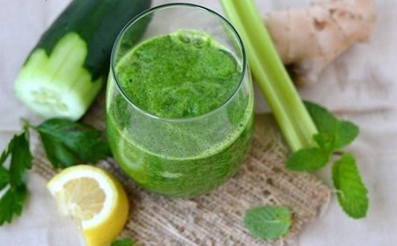

It's hard for anyone not to like a cucumbers as they are so cool and refreshing. They also help with the burning of stomach fat as they're high in water content, packed with fiber and low in calories. Drink this before going to bed and it will help you to melt belly fat while you sleep.

Ingredients
How To Make It